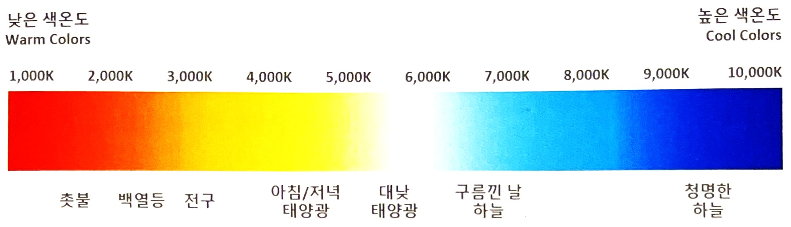
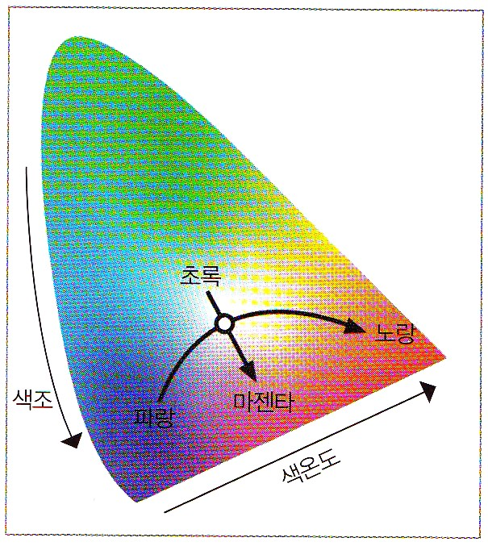
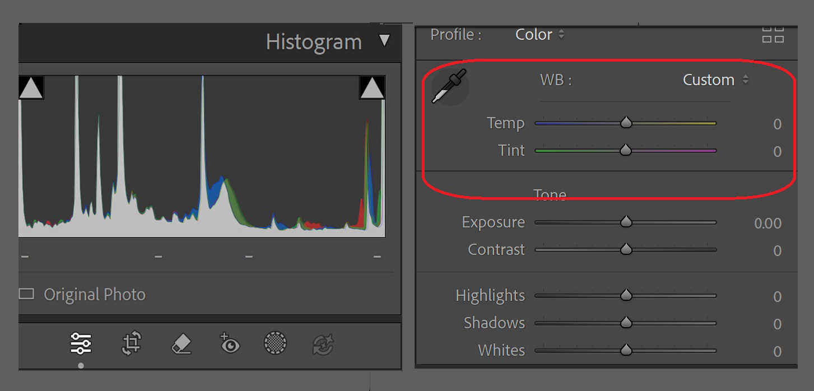
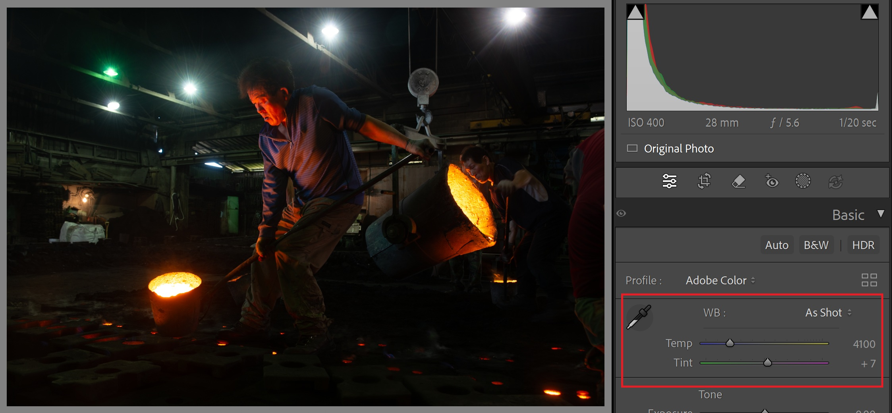
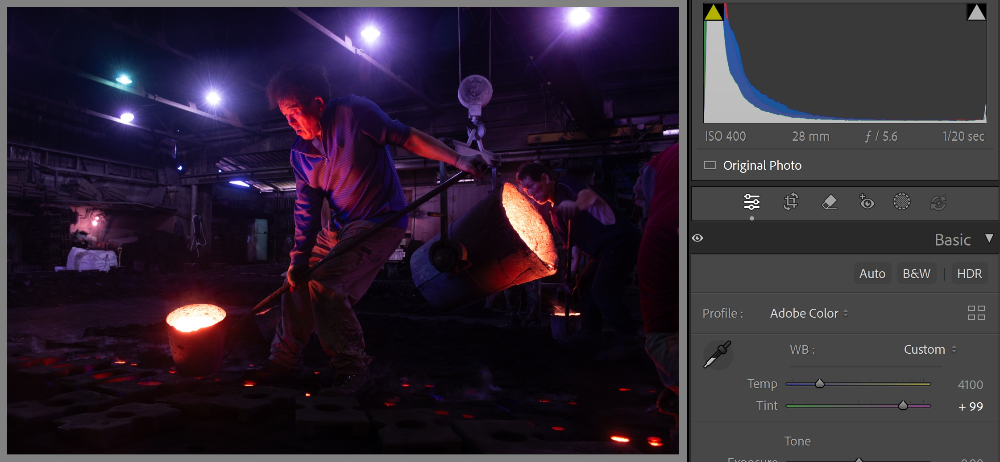
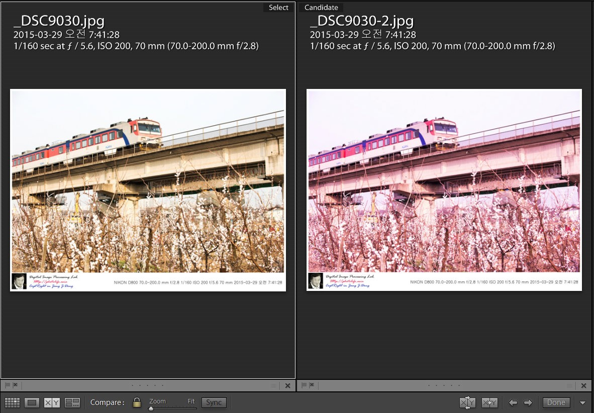

화이트밸런스 보정은 색온도(color Temperature)보정과 색조(Tint)보정으로 나뉜다. 일반적으로 화이트밸런스라고 하면 주광원의 색온도로 인해 왜곡된 색을 보정하는 것을 말한다. 그러나 좀 더 세밀하게 따져보면 색공간 안의 파란색(blue)에서 빨간색(red)사이의 색을 보정하는 것이 색온도에 의한 화이트밸런스이고, 녹색(green)에서 마젠타(magenta)사이의 색을 보정하는 것은 색조에 의한 화이트밸런스이다.
색조에 의한 화이트밸런스 보정은 스펙트럼 파장이 균일하지 않게 방출되는 빛 때문에 발생한다. 주광원인 태양빛과 대부분의 인공관원들은 균일한 파장을 방출하기 때문에 색조에 의한 화이트밸런스를 보정하는 경우는 드물다. 하지만 색조효과가 필요한 경우엔 의도적으로 사용하기도 한다.
예를 들어, 사진에 녹색(green) 또는 마젠타(magenta)의 색감을 요할 때 색조 보정을 할 수 있다. 물론 그 반대의 경우도 가능하다.
[색온도][1/p93]
[색온도][1/p93]
[색공간에서 색온도는 파랑→노랑으로 진행되고, 색조는 초록→마젠타로 진행된다]
그럼 반사율에 따라 측광이 어떻게 적용되는지 알아보기로 하자.
아래 그림은 색온도 4100°k로 어두운 곳에서 촬영한 것으로 색조를 마젠타 쪽으로 +77 보정한 것이다.
반대로 깜깜한 밤하늘이 배경인 야경을 찍으면 사진은 생각한 것보다 밝게 찍힌다. 이 경우에는 –1~-2스톱 어둡게 찍어야 눈으로 본 야경의 밝기를 그대로 담을 수 있다.
|  |  |
[사진에 마젠타 색감을 더해 다른 분위기를 나타낼 수 있다]
[참고문헌]
[1]라아트룸 클래식CC 사진보정 클래스 정현성, 비제이퍼블릭, 2020.12.29.
[2]프로페셔널 사진의 조건/라이트룸5, 백종수, 이지스퍼블리싱, 2013.11.14.
....
....
....
....
....
....